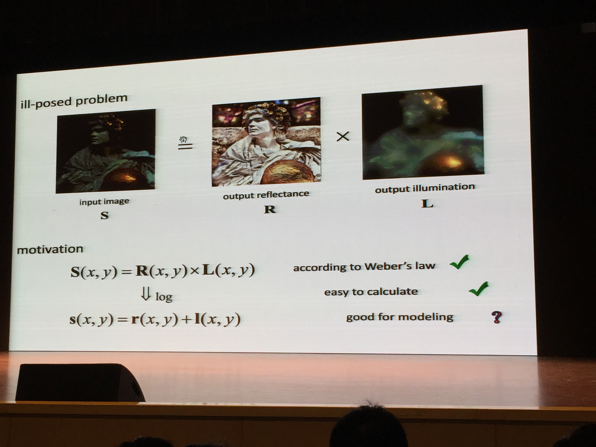
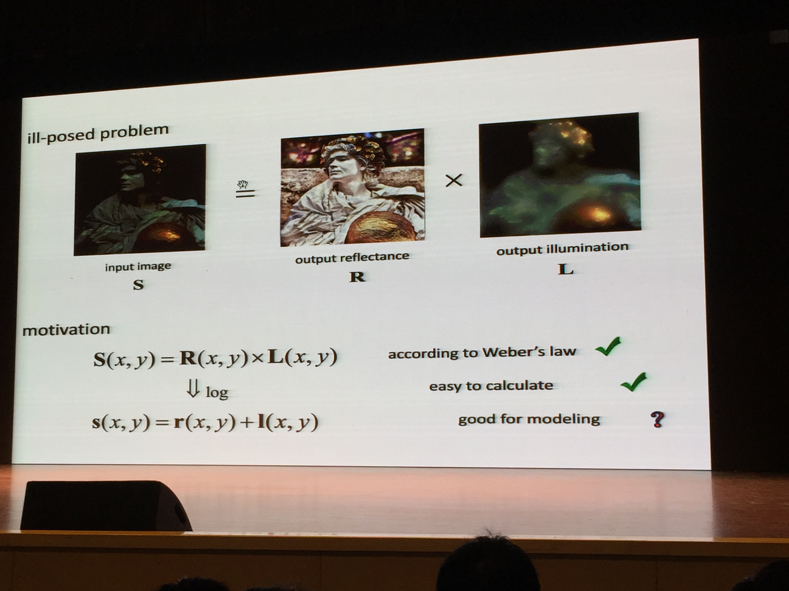

为了促进智能信息处理领域同行间的交流，陆汝钤院士发起组织了"智能信息处理系列研讨会"。“机器学习及其应用”研讨会自2002年开始，先后在上海、南京、北京、西安等地举行。该研讨会每年邀请海内外从事机器学习及相关领域研究的专家与会进行学术交流。研讨会不征文，不收取注册费，欢迎机器学习及相关领域的学者、研究生前来旁听特邀报告并参加讨论。为了促进机器学习及相关领域的研究生之间以及研究生与资深学者之间的交流，2006-2010年在机器学习及其应用研讨会（MLA）期间，同时举行的机器学习及其应用学生研讨会（SSMLA），此后该研讨会融入MLA的Poster session.MLA系列研讨会本着“学术至上，其余从简”的原则
2016年11月4日-6日，“机器学习及其应用”（MLA）系列研讨会在南京大学成功举办。第十四届研讨会将由南京大学计算机软件新技术国家重点实验室主办，由南京航空航天大学计算机科学与技术学院、江苏省软件新技术与产业化协同创新中心协办。拟邀请海内外从事机器学习及相关领域研究的10余位专家与会进行学术交流，包括特邀报告、顶会论文交流、以及Top Conference Review等部分。
我实验室黄悦老师，学生赵彦杰、郑瀚、孙立言和杜宝林参加了本次会议。MLA系列研讨会是国内机器学习领域的著名研讨会，此次参会人数超过1000人。我实验室黄悦老师对傅雪阳同学的2016CVPR论文“A weighted variationl model for simulataneous refletance and illumination estimation”在台上进行了简短的spot light，收到了热烈的反响。之后，该论文演讲的海报也引来了众多学者的围观与交流。这次会议不仅展示了我们实验室的学术成果，也让随行的同学们得到了许多学术交流的机会，收获颇丰。
 
